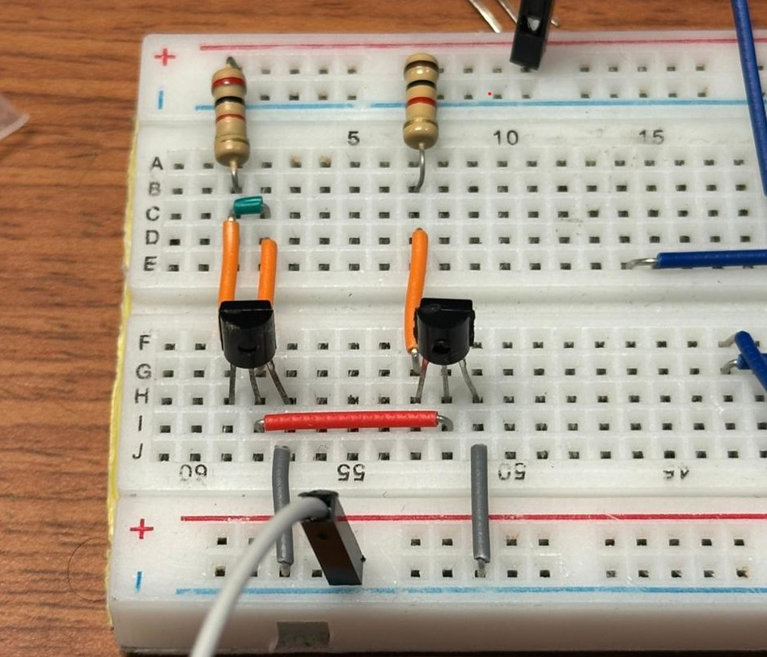
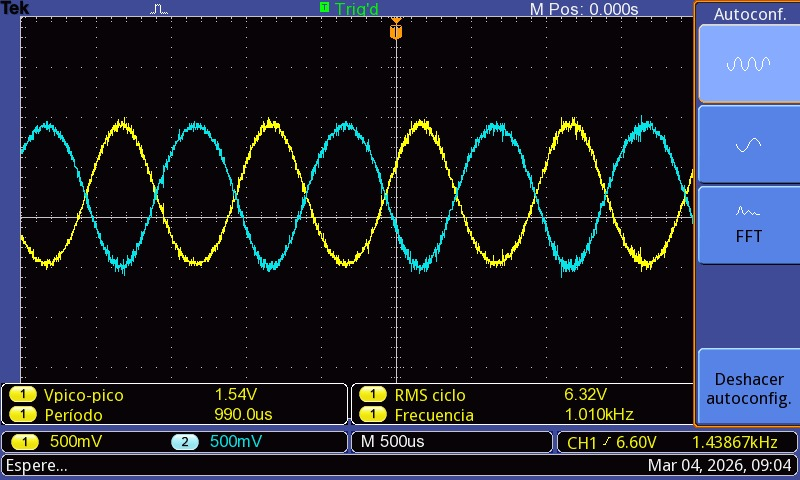
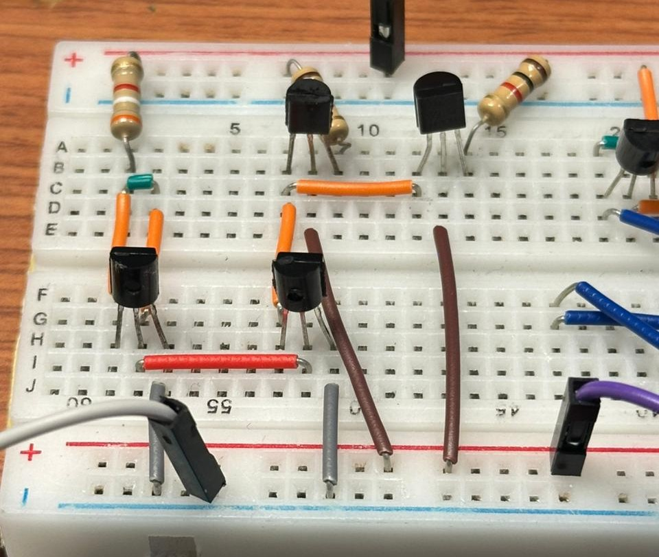
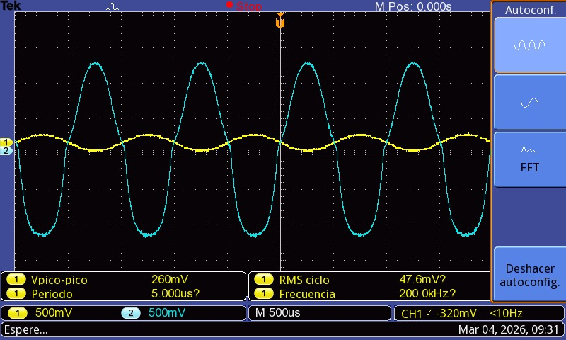
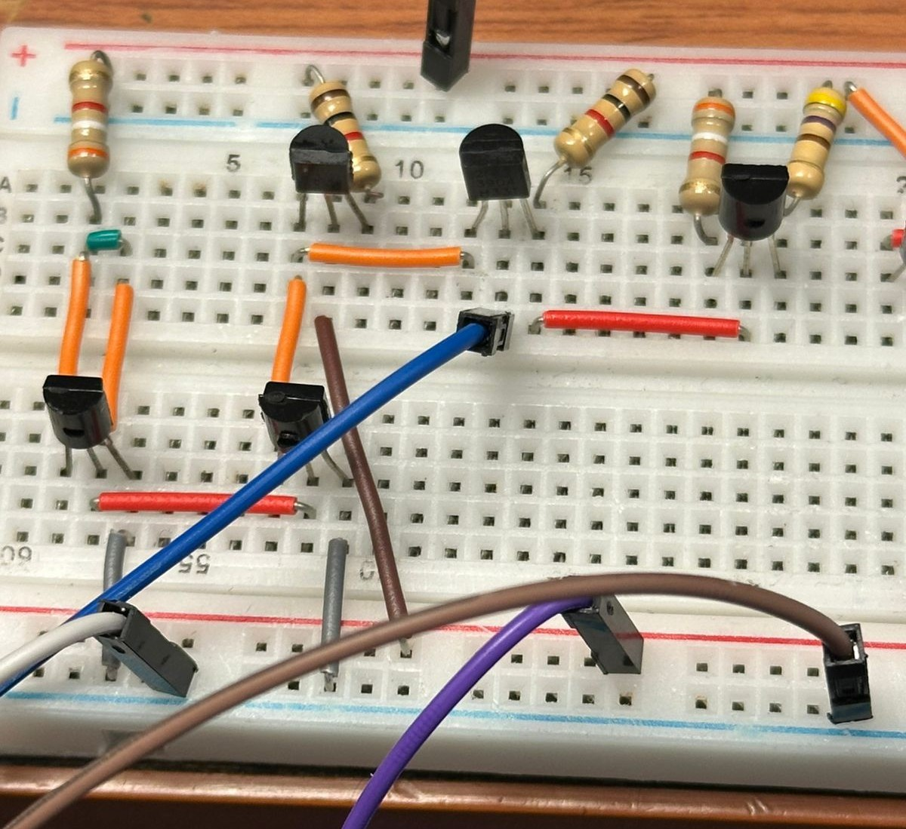
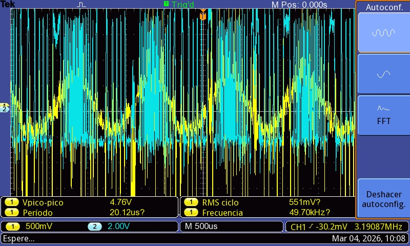
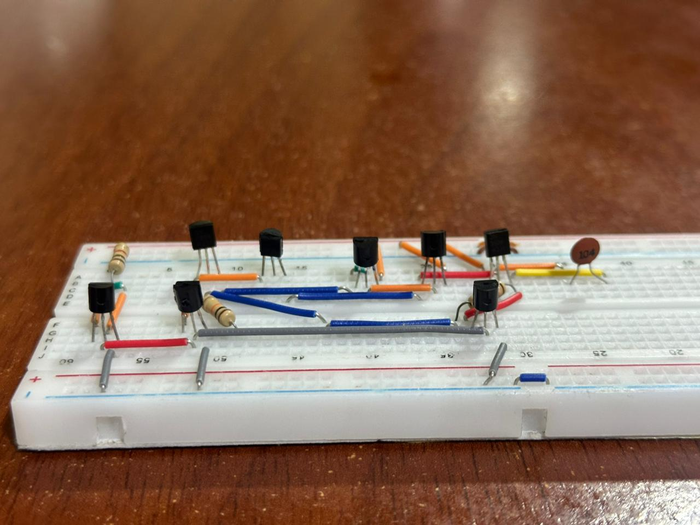
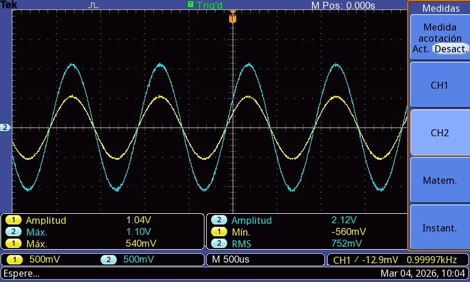

Proceso de Montaje
El protoboard permite validar el diseño antes de la PCB.
- Identificación correcta de terminales en los transistores
- Verificación de continuidad con multímetro
Fuente de Corriente, Par Diferencial y Espejo de Corriente

Montaje en Protoboard

Resultado en Osciloscopio
Etapa de Ganancia (Etapa con Degeneración)

Montaje en Protoboard

Resultado en Osciloscopio
Carga Activa y Segunda Etapa de Ganancia

Montaje en Protoboard

Resultado en Osciloscopio
Compensación

Montaje en Protoboard

Resultado en Osciloscopio
Pruebas Iniciales
- ✓ Comparación entre valores simulados y medidos
- ✓ Observación de la señal amplificada en el osciloscopio
- ✓ Confirmación de estabilidad del circuito